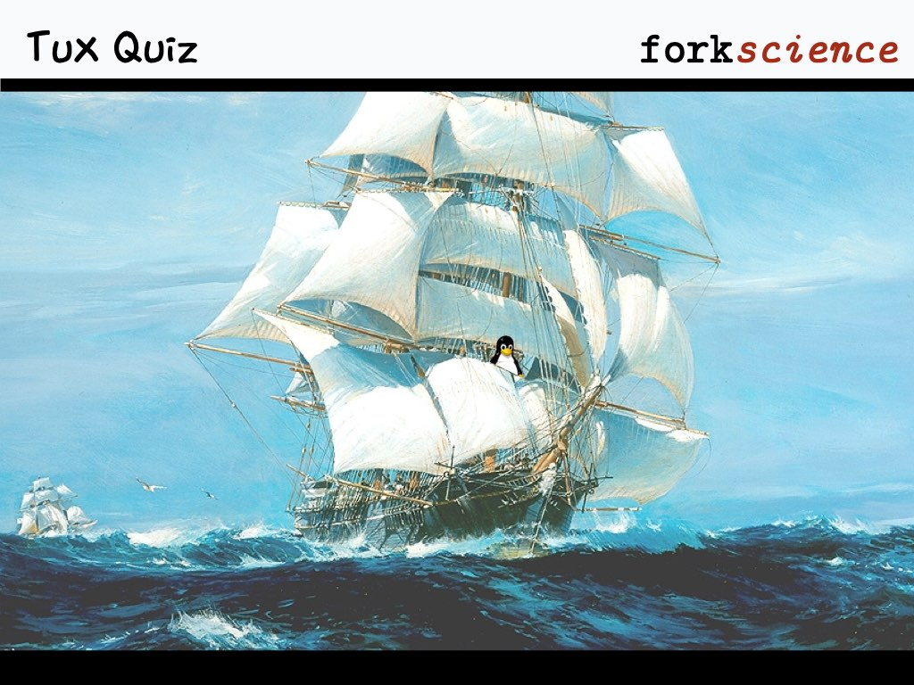

Question:
What is a system call?
A
Function provided by operating system that does something on behalf of a program
B
The type of call the system makes to get the user's attention
C
Modern systems can be called on the phone to execute commands